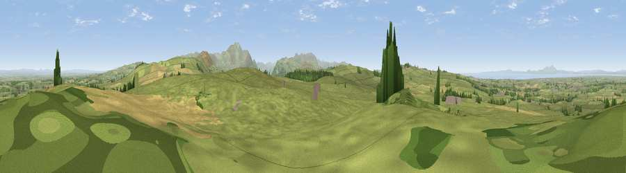

Viewpoint near Bothel
#2559 in England · top 24% of its area beats it · near Bothel · access?Where it is
The exact computed spot (NY 17200 38225). Click the marker for map links.
Public access: no public right of way or access land is recorded at this exact spot — it may be on private land. Computed from Natural England's CRoW access layer and OpenStreetMap rights of way — not the legal definitive map. Always verify locally.
The view, rendered

A 360° render of this exact spot computed from the terrain model, tree cover and land cover — summer colours, afternoon light, calibrated against photographs of famous viewpoints. Real trees, hedges and buildings will differ in detail.
The panorama
Grey silhouette: terrain skyline in each direction (720 bearings, Earth curvature and refraction included). Dashed green: skyline with trees (+15 m) and buildings (+8 m) as obstacles. Blue strip: how far the ground is visible on each bearing.
Where the view opens
Wedge length = distance to the farthest visible ground on that bearing (vegetation-aware). Rings at 10, 25 and 50 km.
What fills the view
75% grassland · 12% cropland · 10% woodland · 2% water ·
Angular shares of the visible panorama (visual magnitude), not map area. Landscape diversity 0.37 (0–1 Shannon).
Key numbers
More beautiful places nearby
The staircase of upgrades: each row has a higher view potential than everything closer. Driving times are estimates from straight-line distance, calibrated against real road routing — check an actual route before setting out.
| Place | Direction | Drive | Score |
|---|---|---|---|
| Caer Mote | ESE · 3 km | ~6 min | 75.6 |
| Moota Hill | SW · 3 km | ~8 min | 77.3 |
| Viewpoint near Bewaldeth | ESE · 5 km | ~11 min | 78.0 |
| Binsey | ESE · 6 km | ~12 min | 80.5 |
| Viewpoint near Embleton | SSE · 9 km | ~17 min | 81.8 |
| Viewpoint near Embleton | SSE · 9 km | ~17 min | 84.6 |
| Viewpoint near Thornthwaite | SSE · 12 km | ~22 min | 85.5 |
| Ullock Pike | SE · 12 km | ~22 min | 89.4 |
54.73216, -3.28735 · source: screening · position refined by local search. Computed location — check access rights before visiting.